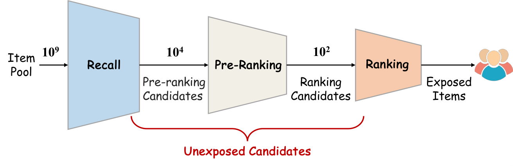
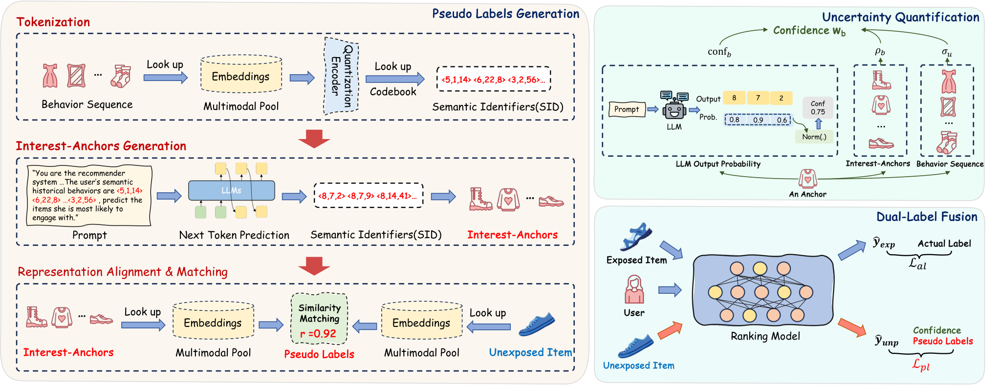
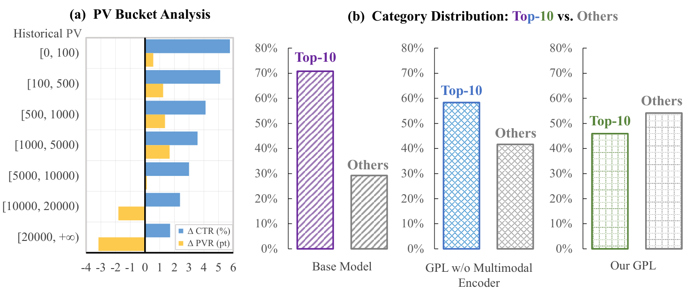

推荐系统的粗排要从召回来的几千个商品里挑出几百个交给精排，但它只能用曝光过的商品训练：用户看到了才有点击或不点击的反馈。线上它却要给全部召回商品打分，其中大部分从没曝光过。训练和线上看到的数据不一样，模型就会偏向热门商品，长尾商品更难被推出来。阿里巴巴这篇论文提出 GPL（Generative Pseudo-Labeling）：离线让一个小型大模型根据用户历史猜出他接下来可能喜欢的一组商品，再拿这些商品去和没曝光的候选比内容相似度，给候选打一个 0 到 1 之间的“伪标签”，和真实点击一起训练粗排模型。淘宝首页“猜你喜欢”两周线上 A/B 测试，点击率 +3.07%，成交转化 +2.51%；前 10 大品类的曝光占比从 70.80% 降到 45.91%。
值得读的人：在级联推荐里做粗排、或者被“只能用曝光数据训练”困扰的团队。整个伪标签流程离线完成，线上粗排模型结构不变、不加延迟，迁移成本主要在离线算力。证据来自淘宝一个场景和一个公开数据集。
它到底在解决什么问题？

现有处理办法各有问题：把没曝光的商品都当负样本，会把其实用户会喜欢的商品标错；随机给用户推一些商品收集无偏反馈，成本太高；用精排模型的分数当软标签教粗排，精排本身也只在曝光数据上训练，偏差会原样传过去；对抗式的分布对齐训练不稳定。作者的思路是让伪标签只依赖商品内容，不依赖曝光记录，这样偏差就不会从行为日志里带进来。
方法

第一步是给商品编号。用一个冻结的多模态编码器（工业数据上是 CLIP）把商品的图片和文字变成一个向量，再用残差量化把向量变成一串编号：第一级码表里找最接近的向量记下编号，把它减掉后在下一级里继续找。工业数据用 3 级、每级 8192 个编号。编号只由内容决定，所以不会带上曝光偏差。
第二步是猜兴趣。把用户点击或购买过的商品按时间先后排好，每个商品换成它的编号，用 LoRA 微调 Qwen2.5-0.5B，让它预测下一个商品的编号。为了压低热门商品的分量，训练时出现频率前 10% 的商品按频率反比降采样。推理时用束搜索一次生成 B=32 个编号，再查表还原成真实商品；98.5% 以上的生成编号能查到，查不到的就在多模态向量空间里找最近的商品。这 32 个商品就是大模型猜的“这个用户接下来可能感兴趣的东西”，论文叫 interest anchor。
第三步是打伪标签。对每个没曝光的候选，算它和这 32 个商品的余弦相似度，取最大的那个，除以温度再过 sigmoid，得到 0 到 1 的伪标签。取最大值而不是平均，是因为大模型猜的商品里总有几个不靠谱，平均会把真正相关的那一个冲淡。
第四步是按可信度加权。大模型这次猜得靠不靠谱，作者用三个信号衡量：
| 信号 | 怎么算 | 说明什么 |
|---|---|---|
| 分散程度 | 32 个猜测商品两两之间余弦距离的平均 | 越分散，说明模型对这个用户的意图越没把握，这个用户的所有伪标签整体降权 |
| 和历史的一致性 | 一个猜测商品与用户历史商品的平均相似度 | 越像用户过去的兴趣，越可能是真偏好 |
| 生成概率 | 生成这串编号时各级概率取对数的平均 | 概率低说明模型在训练分布之外乱猜 |
具体算法是：每个猜测商品先算一个原始分，等于 exp(λ₁ × 一致性) 乘 exp(λ₂ × 生成概率)，λ₁、λ₂ 是两个可调系数；32 个原始分一起过一次 softmax，得到相对权重；最后整体乘上 exp(−分散程度)，越分散的用户所有权重越小。一个候选的权重取它最像的那个猜测商品的权重。最终损失是真实标签上的交叉熵，加上带权重的伪标签交叉熵乘一个系数 λ。
大模型按用户调用，每个用户一天只生成一次，和他有多少个没曝光候选无关；96 张 H20 六小时能跑完一天的用户。
实验结果
工业数据是淘宝 14 天日志，约 2 亿用户、2000 万商品、300 亿条交互，前 13 天训练、最后一天验证。下表是工业数据上的部分结果：
| 方法 | HR@3 | HR@10 | AUC | GAUC |
|---|---|---|---|---|
| 只用曝光数据 | 0.4863 | 0.7611 | 0.7096 | 0.6098 |
| 精排分数当软标签 | 0.4938 | 0.8181 | 0.7110 | 0.6114 |
| 最强基线 UECF | 0.5216 | 0.8585 | 0.7246 | 0.6313 |
| GPL | 0.5254 | 0.8680 | 0.7299 | 0.6338 |
相对最强基线的提升不大（AUC +0.005），但在公开数据集 Taobao-MM（880 万用户）上方向一致，AUC 从 0.7055 到 0.7112。
消融里最显眼的两条：去掉真实标签只用伪标签，HR@3 从 0.5254 掉到 0.3687，说明伪标签只能做补充；去掉可信度加权，HR@3 降到 0.5215。换更大的大模型有帮助但不多：7B 的 AUC 是 0.7354，0.5B 是 0.7299，而 7B 每个 token 的计算量是 0.5B 的约 17 倍，所以作者选了 0.5B。

线上两周 A/B 测试，日活上亿：浏览商品数 +3.53%，点击率 +3.07%，点击后成交 +2.51%，单次浏览超过 200 个商品的用户数 +1.50%，停留时长 +2.16%。按商品历史浏览量分桶，越冷门的商品点击率提升越大，说明伪标签确实把长尾商品推出来了。
局限
- 离线成本不低：每天要给全部用户跑一次大模型生成，再给每个没曝光候选算相似度和权重。
- 伪标签质量本身有限：用伪标签预测真实点击的 AUC 只有约 0.63，远低于模型本身，所以必须配真实标签用。
- λ 和温度是靠线上 A/B 测试选的，换场景要重新调。
- 离线相对最强基线的提升很小，线上收益的对照是原有粗排模型，不是那些去偏基线。
怎么借鉴
如果粗排一直只用曝光数据训练，最便宜的起点是：拿现成的多模态商品向量，给每个用户挑几十个“可能感兴趣”的商品，用最大相似度给没曝光候选打伪标签，带一个较小的权重加进损失，先看长尾商品的点击率有没有起色。生成兴趣商品这一步可以先不用大模型，用现有召回结果代替，验证伪标签方向有效后再换。可信度加权里，“猜测商品之间有多分散”这一项最容易实现，消融里也是作用最大的一项。
读完这篇，你觉得
夜读鸮记下了，谢谢你的反馈。
点一下即可，无需登录；再点一次撤回。只统计匿名次数，不记录你是谁。
讨论
欢迎补充实验细节、复现经验或不同看法。需 GitHub 登录。
正在加载讨论…